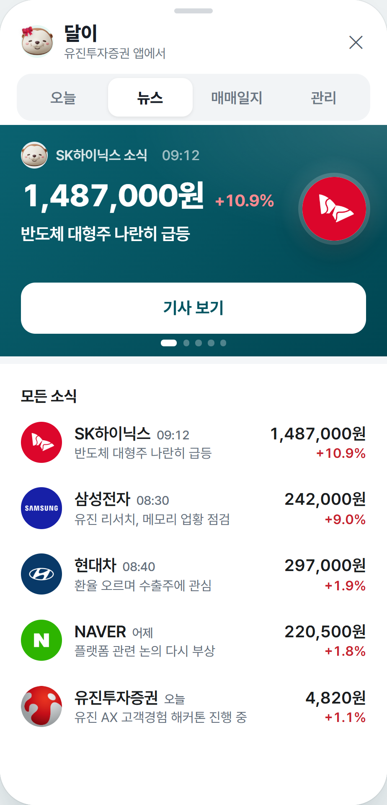
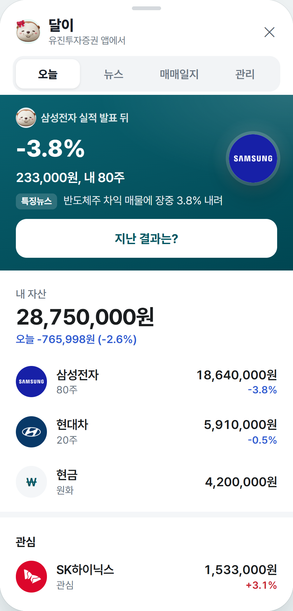
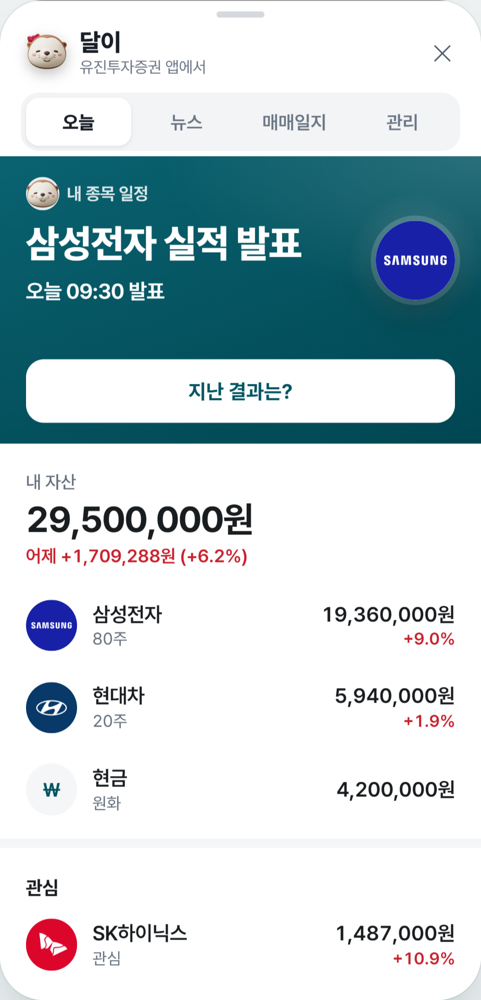
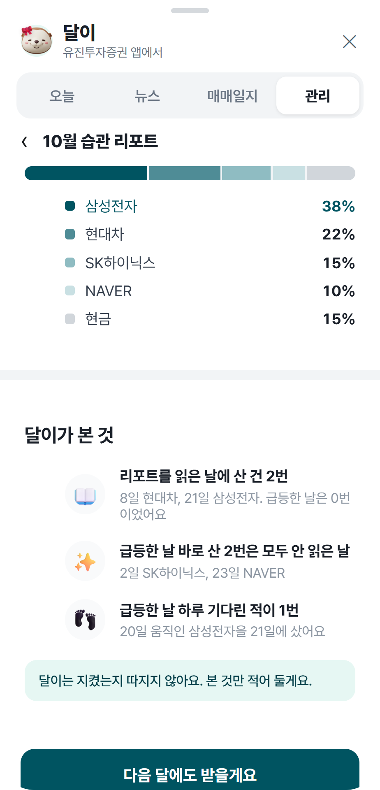
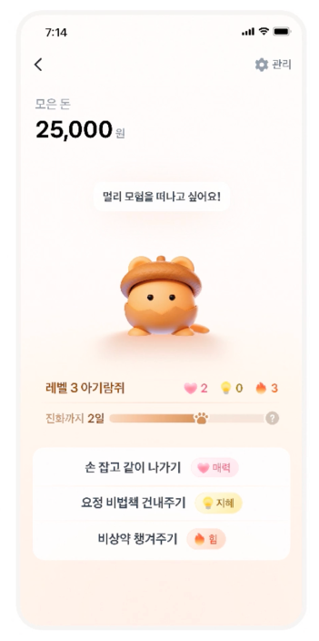
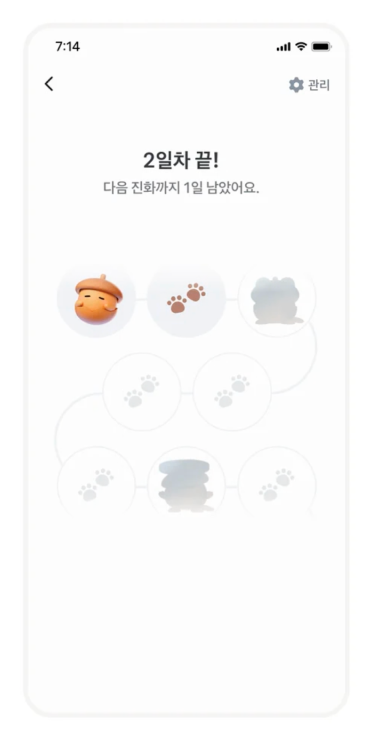
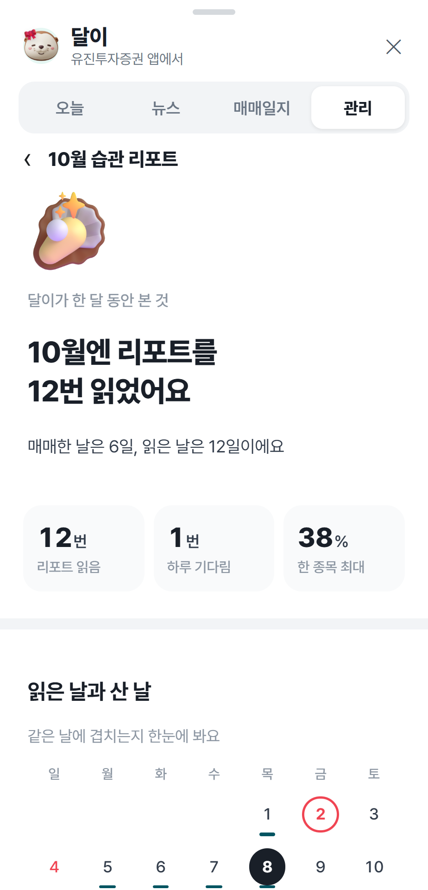

유진 AX 고객경험 해커톤
나를 제일 잘 아는
AI 투자비서, 달이
찾지 않아도, 지금 필요한 정보와
다음 행동이 먼저 와요.
챔피언 MTS와 유진투자선물 앱 안에서,
확인부터 주문까지.
휴대폰으로 직접 써 보세요
시연용 가상 화면
고객은 챔피언 MTS에 거래할 때만 들어와요.
필요한 정보가 제때 보이지 않아서요
“챔피언 MTS는 언제 사용하시나요?”
“거래할 때만 들어와요.”
2026년 상반기 고객인터뷰 결과, 1인 60분
100%
분석은 다른 앱에서 끝내고
여기서는 매수 버튼만
100%
왜 올랐는지, 실적 발표 때 반응
보고 싶은데 앱엔 없어요
그래서 위기예요
매수 버튼은 어느 앱에나 있어요.
주문만 남으면, 갈아탈 이유만 남아요
지금 유진을 쓰는 이유는 주문이 안정적이고, 담당 직원이 챙겨 주고, 오래 거래해서예요. 비율은 인터뷰한 고객 기준
시연용 가상 화면
2
WHAT
고객가치
고객이 늘 묻는 세 가지에, 묻기 전에 답이 와 있어요

왜 올랐지?
관심 종목이 오르면 이유 한 줄

왜 떨어졌지?
보유 종목이 빠지면 그날 특징뉴스

어떻게 대응하지?
실적 발표 전, 최근 4번 결과와 한 줄
사라, 팔라는 추천이 아니에요. 다음에 볼 것과 갈 화면만 먼저 열어 둬요. 판단은 고객이 해요
시연용 가상 화면
3
WHAT
고객가치
내 종목 소식은 실시간으로 먼저 와요
검색하지 않아도 돼요. 달이를 열면 내 종목 소식이 이미 와 있어요
시연용 가상 화면
4
HOW
유진다움
나를 제일 잘 아는 비서는 유진이라서 만들 수 있어요

유진투자선물 앱
새 앱을 깔지 않아요. 두 앱 메인 오른쪽 아래, 같은 자리에 달이가 있어요
시연용 가상 화면
5
챗봇은 고객이 묻고 기다려요.
달이는 AI가 먼저 가져와요
고객이 질문을 타이핑하고 기다려요
묻기 전에, 답이 와 있어요
검색, 커뮤니티, 차트 앱, 그다음 MTS
앱 4개, 30분
공시와 뉴스는 실제 데이터, 숫자는 규칙, 문장은 AI. 시연의 AI 문장은 미리 써 둔 것이고, 실제 서비스에서는 생성형 AI가 그때그때 써요
시연용 가상 화면
5
HOW
AI 활용 및 구현
확인부터 주문까지 챔피언 MTS 안에서 끝나요

내 종목 일정이 맨 위에

필요한 정보 확인하고 주문하기
새 앱을 깔지 않아요. 주문 화면 오른쪽 위 달이 버튼으로 다시 돌아와요. 유진투자선물 앱도 같은 흐름이에요
시연용 가상 화면
7
HOW
고객가치
매일 오는 이유는, 배우고 돌아보고 나누는 것

달이 키우기
리포트 읽고 같이 걸으면 자라요

AI 투자습관 진단
읽은 날과 산 날을 같이 돌아봐요

사회적가치
숲이 차면 노을공원에 진짜 나무
달이는 지켰는지 따지지 않아요. 본 것만 적어 둬요
시연용 가상 화면
8
HOW
고객가치
키우기의 힘은 가져오고, 광고는 넣지 않아요
T사 고양이 키우기
월 175만 명, 55%가 매일
대신 보상마다 광고, 결제 미션


T사 키워봐요 다람쥐
두 달 반에 60만 계좌
대신 매일 직접 넣고, 빠지면 금리 하락

달이 키우기
광고 0개, 결제 미션 0개
리포트 3줄 읽기, AI 습관 점검, 나무 심기
비즈니스포스트 2025.4.15, T사 기술 블로그, 글로벌이코노믹 2026.10.22, 이용자 공개 캡처와 T사 공개 이미지. 달이 화면과 숫자는 가상
시연용 가상 화면
9
고객경험은 우리가 주고 싶은 것이 아니라,
고객이 받고 싶은 것을 주는 일이었어요
처음 기획
내가 좋아하는 게임을
MTS 안에 만들려고 했어요
바꾼 기획
우리 고객의 연령대와 증권 앱을 쓰는 패턴을 듣고 나서,
게임이 아니라 먼저 오는 한 줄로 바꿨어요
AI 시대가 되어도 고객경험의 출발은
고객의 목소리에 귀 기울이는 것이에요
PR 48개. 고친 것의 대부분은 기능이 아니라 문구와 크기였어요. 실제 회사의 공시와 실적은 지어내지 않았어요
시연용 가상 화면
10
찾지 않아도 먼저 오는 경험을,
챔피언 MTS에서 시작해 유진의 모든 앱으로
챔피언 MTS에서 먼저
오늘, 뉴스, 매매일지
일부 고객 A/B 테스트
비거래일 접속률, 알림 뒤 앱 열기
유진투자선물 앱에도 같은 달이
달이 키우기, AI 투자습관 진단
휴면 전환율, 계좌 이전 출고율
노을공원 나무 심기 시작
매매일지가 상담으로 이어져요
고객이 동의하면 담당 직원과 같이 봐요
직원이 없는 시간은 달이가 채워요
궁금할 때, 다른 앱 말고 챔피언 MTS
거래량은 재지 않아요. 고객이 앱을 여는 이유가 늘었는지를 재요
시연용 가상 화면
11
DEMO
시연
챔피언 MTS 안의 달이, 확인부터 주문까지
1분 56초, 소리 없음. 화면 안 이름과 숫자는 전부 가상이에요
시연용 가상 화면
12

감사합니다
나를 제일 잘 아는 AI 투자비서, 달이
시연용 가상 화면
13